Also known as Shithead, Palace, Karma, Idiot, Shed, Boot, Ten-Two Slide, China Hand, Vändtia or Paskahousu. One game, a dozen names, and everyone swears their hostel played it right. These are the rules as Hit Head plays them.
What you need
54 cards, including four special cards: Zero, Transparent, Bomb and Hit Head (the game's joker).
Up to 4 players.
The deal
Every player gets nine cards, in three groups of three:
3 hidden — face down on the table. Nobody looks at these, including you.
3 revealed — face up, resting on the hidden ones. Everybody can see them.
3 in hand — only you can see them.
Whatever is left becomes the draw pile.
The goal
Get rid of all nine of your cards. The last player left holding cards loses.
A turn
Play a card equal to or higher than the card on top of the pile. Then draw back up to three cards in hand, for as long as the draw pile lasts.
Can't play? You take the entire pile into your hand, and the next player can play anything they like. This is the whole tension of the game: every card you play makes the pile bigger for whoever gets stuck with it.
The order you play from
First you get rid of the cards in your hand. Only once your hand is empty and the draw pile is gone do you start playing from your three face-up cards. Done with those? Now all that is left is to gamble on one of your three hidden cards.
Hidden cards are a blind gamble. You flip one without knowing what it is. If it turns out to be illegal on the current pile, you take the pile — with that card in it. Nobody escapes cleanly at the end.
Stacking and burning
Holding more than one card of the same value? Play them all in the same turn. That is how you dump a hand fast, and it is also how you set up a burn.
Four cards of the same value in a row burn the pile. It does not matter whether one player played all four or four players each contributed one. The pile is removed from the game entirely, and the player who completed the four gets an extra turn.
The game cards
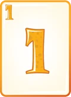
1
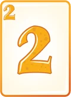
2
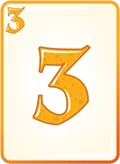
3
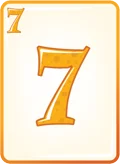
7
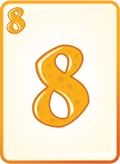
8
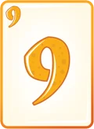
9
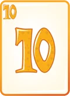
10
Number cards with an extra function:
Card
Name
What it does
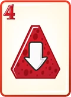
The turn-around
Played this card? The player after you can only play cards with a value of 4 or lower (4, 3, 2, 1) or one of the special cards (Transparent, Zero, Bomb or Hit Head).
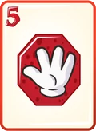
Stop
Skips the next player. If you play more than one, players are skipped accordingly.
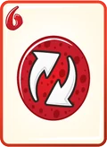
Reverse
Flips the direction of play.
The strongest cards in the game — they can be played on any card:
Card
Name
What it does
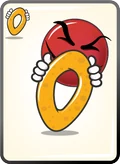
Zero
Can be played on any card, and drops the pile back to zero — the next player can play whatever they like.
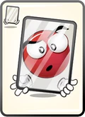
Transparent
Can be played on any card. As its name suggests, it keeps the value of the card it was placed on. The next player goes by the card underneath the Transparent.
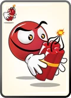
Bomb
Blows up the pile and removes it from the game. Whoever played it gets an extra turn and can play any card they like.
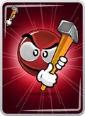
Hit Head
The strongest card in the game. There are only two of them. Whoever plays it can give the pile that has built up on the table to one of the opponents, preferably the one who is about to win. But beware: if the opponent you gave the cards to also holds a Hit Head card, they can take revenge and hand the cards right back to you. After using the joker you get an extra turn.
Common questions
Is Hit Head the same game as Shithead or Palace?
Yes. It is the same shedding card game that travellers have played in hostels for decades, known by different names in different countries — Palace, Karma, Idiot and Shed in English, Vändtia in Sweden, Paskahousu in Finland. Hit Head is that game on Android, with dedicated cards that make it easy to remember what each card does.
How many people can play?
Up to four players — you and up to three others. In Play with Friends you can play 1-on-1, or with two or three friends. In multiplayer you play against people around the world. In single player you can practise against bots.
Is it free?
Yes. There are optional purchases for coins and avatars, but the game itself is free.
If I have a card I could legally play, do I have to play it?
No — you can choose to take the pile instead, by tapping the card sitting on the table.
More about the original game
Hit Head is based on a folk card game played in many countries around the world, by travellers and players everywhere. What Hit Head does is take all those rules and unify them into something simple, easy to remember and easy to play. If you want the wider story, these are worth reading:
ידוע גם בשמות שיטהד, נו שיט, פאלאס, קארמה, אידיוט, שד, בוט, וונדטיה, China Hand או פסקהאוסו. משחק אחד, תריסר שמות, וכל אחד בטוח שבאכסניה שלו שיחקו נכון. אלה החוקים כפי שהיט הד משחק אותם.
מה צריך
54 קלפים, כולל ארבעה קלפים מיוחדים: מאפס, שקוף, פצצה והיט הד (הג'וקר של המשחק).
עד 4 שחקנים.
החלוקה
כל שחקן מקבל תשעה קלפים, בשלוש קבוצות של שלושה:
3 חסויים — הפוכים על השולחן. אף אחד לא מציץ בהם, גם לא אתה.
3 גלויים — פתוחים, מונחים על החסויים. כולם רואים אותם.
3 ביד — רק אתה רואה אותם.
מה שנשאר הופך לקופת המשיכה.
המטרה
להיפטר מכל תשעת הקלפים שלכם. השחקן האחרון שנשאר עם קלפים ביד מפסיד.
תחילת משחק
מי שיש לו את הקלף הנמוך ביותר מתחיל במשחק. הקלף 1 הוא הכי נמוך והקלף עשר הוא הכי גבוה.
הכלל המרכזי במשחק
בתורכם, מניחים קלף שווה או גבוה מהקלף שנמצא בראש הערימה. כל עוד יש קופה, היא תשלים לכם אוטומטית את מספר הקלפים ביד לשלושה.
אין לכם קלף חוקי להניח? באסה, כל הערימה בדרך אליכם והשחקן הבא יכול לשים כל קלף שירצה.
הסדר שממנו משחקים
קודם נפטרים מהקלפים שביד. רק אחרי שהיד שלכם התרוקנה וגם קופת המשיכה נגמרה מתחילים לשחק עם שלושת הקלפים הגלויים שלכם. סיימתם איתם? כעת נותר לכם להמר על אחד משלושת הקלפים החסויים.
הקלפים החסויים הם הימור עיוור. הופכים קלף בלי לדעת מה הוא. אם הוא לא חוקי על הערימה הנוכחית — לוקחים את כל הערימה, יחד איתו. אף אחד לא מסיים בקלות.
ערימות ושריפות
יש לך יותר מקלף אחד באותו ערך? אפשר להניח את כולם באותו תור. ככה נפטרים מהיד מהר, וככה גם מכינים שריפה.
ארבעה קלפים באותו ערך ברצף שורפים את הערימה. לא משנה אם שחקן אחד הניח את כל הארבעה או שארבעה שחקנים תרמו קלף כל אחד. הערימה יוצאת מהמשחק לגמרי, ומי שהשלים את הרביעייה מקבל תור נוסף.
קלפי המשחק
12378910
קלפי מספר בעלי תפקיד נוסף:
קלף
שם
מה הוא עושה
ההיפוך
הנחתם את הקלף הזה? השחקן שאחריכם יכול לשים רק קלפים שהערך שלהם הוא 4 ומטה (4, 3, 2, 1) או את אחד מהקלפים המיוחדים (שקוף, מאפס, פצצה או היט הד).
עצור
מדלג על השחקן הבא. שמתם יותר מאחד, אז הדילוג הוא בהתאם.
היפוך כיוון
מחליף את כיוון המשחק.
הקלפים החזקים במשחק, אותם ניתן לשים על כל קלף:
קלף
שם
מה הוא עושה
מאפס
אפשר להניח על כל קלף, והוא מוריד את הערימה חזרה לאפס — השחקן הבא יכול לשים מה שהוא רוצה.
שקוף
אפשר להניח על כל קלף, וכשמו כן הוא, הוא שומר על הערך של הקלף שעליו הונח. השחקן הבא מתייחס לקלף שמתחת לשקוף.
פצצה
מפוצץ את הערימה ומוציא אותה מחוץ למשחק, מי שהניח מקבל תור נוסף ויכול לשים איזה קלף שירצה.
היט הד
הקלף הכי חזק במשחק. יש רק שניים כאלה. מי שהניח אותו יכול להעניק לאחד מהיריבים, עדיף לזה שהולך לנצח, את הערימה שהצטברה על השולחן. אבל זהירות: אם ליריב שנתתם לו את הקלפים יש גם קלף היט הד, הוא יכול לנקום בכם ולהחזיר לכם את הקלפים שהענקתם לו. לאחר השימוש בג'וקר מקבלים תור נוסף.
שאלות נפוצות
האם היט הד זה אותו משחק כמו שיטהד או פאלאס?
כן. זה אותו משחק הקלפים שתרמילאים משחקים באכסניות כבר עשרות שנים, שנקרא בשמות שונים במדינות שונות — פאלאס, קארמה, אידיוט ושד באנגלית, וונדטיה בשוודיה, פסקהאוסו בפינלנד. היט הד הוא המשחק הזה באנדרואיד, רק עם קלפים ייעודיים, שיהיה לכם קל לזכור מה כל קלף עושה.
כמה אנשים יכולים לשחק?
עד ארבעה שחקנים — אתם ועוד עד שלושה. במשחק מול חברים אפשר לשחק אחד על אחד, או עם שניים או שלושה חברים. במולטיפלייר משחקים מול אנשים בכל העולם. בסינגל פלייר אתם יכולים להתאמן מול בוטים.
האם זה בחינם?
כן. יש רכישות אופציונליות של מטבעות ודמויות, אבל המשחק עצמו חינמי.
אם יש לי קלף שאני יכול לשים, האם אני חייב תמיד לשים אותו על הערימה?
לא, אתה יכול לבחור לקחת את הערימה שהצטברה על השולחן, בלחיצה על הקלף שנמצא על השולחן.
עוד על המשחק המקורי
היט הד מבוסס על משחק עממי שנפוץ בקרב מדינות רבות ומשוחק על ידי מטיילים ושחקנים בכל העולם. הגדולה של היט הד שהיא לקחה את כל הכללים ואיחדה אותם למשהו פשוט שיהיה קל לזכור ולשחק. אם מעניין אתכם הסיפור הרחב, כדאי לקרוא:
Hur man spelar Hit Head — de fullständiga reglerna
Även känt som Shithead, Palace, Karma, Idiot, Shed, Boot, Ten-Two Slide, China Hand, Vändtia eller Paskahousu. Ett spel, ett dussin namn, och alla svär att deras vandrarhem spelade det rätt. Det här är reglerna så som Hit Head spelar dem.
Vad du behöver
54 kort, inklusive fyra specialkort: Nollan, Det genomskinliga kortet, Bomben och Hit Head (spelets joker).
Upp till 4 spelare.
Utdelningen
Varje spelare får nio kort, i tre grupper om tre:
3 dolda — vända nedåt på bordet. Ingen tittar på dessa, inte ens du.
3 synliga — vända uppåt, vilande på de dolda. Alla kan se dem.
3 i hand — bara du kan se dem.
Det som blir över blir draghögen.
Målet
Bli av med alla dina nio kort. Den sista spelaren som har kort kvar förlorar.
En omgång
Lägg ett kort som är lika högt eller högre än kortet överst i högen. Dra sedan upp till tre kort i handen igen, så länge draghögen räcker.
Kan du inte lägga? Du tar upp hela högen på handen, och nästa spelare kan lägga vad som helst. Det är hela spänningen i spelet: varje kort du lägger gör högen större för den som blir sittande med den.
Ordningen du spelar från
Först blir du av med korten på handen. Först när din hand är tom och draghögen är slut börjar du spela med dina tre öppna kort. Klar med dem? Då återstår bara att chansa på ett av dina tre dolda kort.
Dolda kort är ett blint vågspel. Du vänder ett utan att veta vad det är. Om det visar sig vara ogiltigt på den aktuella högen tar du högen — med det kortet i den. Ingen kommer undan rent på slutet.
Stapling och bränning
Har du fler än ett kort med samma värde? Lägg dem alla i samma tur. Så gör du dig av med handen snabbt, och så förbereder du också en bränning.
Fyra kort med samma värde i rad bränner högen. Det spelar ingen roll om en spelare lade alla fyra eller om fyra spelare lade ett var. Högen tas bort ur spelet helt, och spelaren som fullbordade fyrtalet får en extra tur.
Spelets kort
12378910
Sifferkort med en extra funktion:
Kort
Namn
Vad det gör
Vändningen
Har du lagt det här kortet? Spelaren efter dig kan bara lägga kort med värdet 4 eller lägre (4, 3, 2, 1) eller något av specialkorten (Det genomskinliga kortet, Nollan, Bomben eller Hit Head).
Stopp
Hoppar över nästa spelare. Har du lagt fler än ett hoppas motsvarande antal spelare över.
Omvänd
Vänder spelriktningen.
Spelets starkaste kort — de kan läggas på vilket kort som helst:
Kort
Namn
Vad det gör
Nollan
Kan läggas på vilket kort som helst, och återställer högen till noll — nästa spelare kan lägga vad som helst.
Det genomskinliga kortet
Kan läggas på vilket kort som helst, och som namnet antyder behåller det värdet på kortet det lades på. Nästa spelare utgår från kortet under det genomskinliga kortet.
Bomben
Spränger högen och tar bort den ur spelet. Den som lade kortet får en extra tur och kan lägga vilket kort som helst.
Hit Head
Spelets starkaste kort. Det finns bara två. Den som lägger det kan ge högen som samlats på bordet till en av motståndarna, helst den som är på väg att vinna. Men se upp: om motståndaren du gav korten till också har ett Hit Head-kort kan motståndaren hämnas genom att ge tillbaka dem till dig. Efter att du lagt jokern får du en extra tur.
Vanliga frågor
Är Hit Head samma spel som Vändtia eller Shithead?
Ja. Det är samma avläggningsspel som resenärer har spelat på vandrarhem i decennier, känt under olika namn i olika länder — Palace, Karma, Idiot och Shed på engelska, Vändtia i Sverige, Paskahousu i Finland. Hit Head är det spelet på Android, med särskilda kort som gör det lätt att komma ihåg vad varje kort gör.
Hur många kan spela?
Upp till fyra spelare — du och upp till tre andra. I läget Spela med vänner kan du spela en mot en, eller med två eller tre vänner. I multiplayer spelar du mot människor över hela världen. I singleplayer kan du träna mot botar.
Är det gratis?
Ja. Det finns valfria köp av mynt och avatarer, men själva spelet är gratis.
Om jag har ett kort jag kunde lägga lagligt, måste jag lägga det?
Nej — du kan välja att ta högen istället, genom att trycka på kortet som ligger på bordet.
Mer om det ursprungliga spelet
Hit Head är baserat på ett folkligt kortspel som spelas i många länder runt om i världen, av resenärer och spelare överallt. Det Hit Head gör är att ta alla dessa regler och förena dem till något enkelt, lätt att komma ihåg och lätt att spela. Om du vill ha den bredare historien är dessa värda att läsa:
Tunnetaan myös nimillä Shithead, Palace, Karma, Idiot, Shed, Boot, Ten-Two Slide, China Hand, Vändtia tai Paskahousu. Yksi peli, tusina nimeä, ja jokainen vannoo, että heidän hostellissaan pelattiin oikeilla säännöillä. Tässä ovat säännöt sellaisina kuin Hit Headissä pelataan.
Mitä tarvitset
54 korttia, mukaan lukien neljä erikoiskorttia: Nolla, Läpinäkyvä, Pommi ja Hit Head (pelin jokeri).
Enintään 4 pelaajaa.
Jako
Jokainen pelaaja saa yhdeksän korttia, kolmessa kolmen ryhmässä:
3 piilossa — pöydällä kuvapuoli alaspäin. Kukaan ei katso näitä, ei edes sinä.
3 näkyvissä — kuvapuoli ylöspäin, piilossa olevien päällä. Kaikki näkevät ne.
3 kädessä — vain sinä näet ne.
Loput muodostavat nostopakan.
Tavoite
Pääse eroon kaikista yhdeksästä kortistasi. Viimeinen pelaaja, jolla on vielä kortteja kädessään, häviää.
Vuoro
Pelaa kortti, joka on yhtä suuri tai suurempi kuin pinon päällimmäinen kortti. Nosta sitten kädessäsi kolmeen korttiin, niin kauan kuin nostopakkaa riittää.
Eikö löydy pelattavaa? Otat koko pinon käteesi, ja seuraava pelaaja voi pelata mitä haluaa. Tämä on koko pelin jännite: jokainen pelaamasi kortti kasvattaa pinoa sille, joka joutuu nostamaan sen.
Pelijärjestys
Ensin hankkiudut eroon käsikorteistasi. Vasta kun kätesi on tyhjä ja nostopakka on loppunut, alat pelata kolmella avokortillasi. Oletko selvinnyt niistä? Sitten on aika kokeilla onneaan yhdellä kolmesta piilokortistasi.
Piilossa olevat kortit ovat sokko-uhkapeliä. Käännät yhden tietämättä mikä se on. Jos se osoittautuu laittomaksi nykyisellä pinolla, otat pinon — kortti mukanaan. Kukaan ei pääse puhtaasti pois lopussa.
Pinoaminen ja polttaminen
Onko sinulla useampi kortti samalla arvolla? Pelaa ne kaikki samalla vuorolla. Näin pääset eroon kädestä nopeasti, ja näin myös valmistelet polton.
Neljä samanarvoista korttia peräkkäin polttaa pinon. Sillä ei ole väliä, pelasiko yksi pelaaja kaikki neljä vai lisäsivätkö neljä pelaajaa kukin yhden. Pino poistuu pelistä kokonaan, ja nelikon täydentänyt pelaaja saa uuden vuoron.
Pelin kortit
12378910
Numerokortit, joilla on lisätoiminto:
Kortti
Nimi
Mitä se tekee
Kääntäjä
Pelasitko tämän kortin? Seuraava pelaaja voi pelata vain kortteja, joiden arvo on 4 tai pienempi (4, 3, 2, 1), tai jonkin erikoiskorteista (Läpinäkyvä, Nolla, Pommi tai Hit Head).
Pysäytys
Ohittaa seuraavan pelaajan. Jos pelasit useamman kuin yhden, ohitetaan vastaava määrä pelaajia.
Käänteinen
Kääntää pelisuunnan.
Pelin vahvimmat kortit — ne voi pelata minkä tahansa kortin päälle:
Kortti
Nimi
Mitä se tekee
Nolla
Voidaan pelata minkä tahansa kortin päälle, ja se nollaa pinon — seuraava pelaaja voi pelata mitä haluaa.
Läpinäkyvä
Voidaan pelata minkä tahansa kortin päälle, ja nimensä mukaisesti se säilyttää sen kortin arvon, jonka päälle se pelattiin. Seuraava pelaaja katsoo läpinäkyvän alla olevaa korttia.
Pommi
Räjäyttää pinon ja poistaa sen pelistä. Se, joka pelasi kortin, saa uuden vuoron ja voi pelata minkä kortin tahansa.
Hit Head
Pelin vahvin kortti. Niitä on vain kaksi. Kortin pelannut voi antaa pöydälle kertyneen pinon yhdelle vastustajista, mieluiten sille, joka on voittamassa. Mutta varo: jos vastustajalla, jolle annoit kortit, on myös Hit Head -kortti, hän voi kostaa ja palauttaa kortit suoraan sinulle. Jokerin pelaamisen jälkeen saat uuden vuoron.
Usein kysytyt kysymykset
Onko Hit Head sama peli kuin Paskahousu tai Shithead?
Kyllä. Se on sama korttipeli, jota matkailijat ovat pelanneet hostelleissa vuosikymmeniä, tunnettu eri nimillä eri maissa — Palace, Karma, Idiot ja Shed englanniksi, Vändtia Ruotsissa, Paskahousu Suomessa. Hit Head on se peli Androidilla, erityisillä korteilla, joiden ansiosta on helppo muistaa, mitä kukin kortti tekee.
Kuinka monta ihmistä voi pelata?
Enintään neljä pelaajaa — sinä ja enintään kolme muuta. Kaverien kanssa pelattaessa voit pelata yksi yhtä vastaan tai kahden tai kolmen kaverin kanssa. Moninpelissä pelaat ihmisiä vastaan ympäri maailmaa. Yksinpelissä voit harjoitella botteja vastaan.
Onko se ilmainen?
Kyllä. Kolikoita ja hahmoja voi ostaa valinnaisesti, mutta itse peli on ilmainen.
Jos minulla on kortti, jonka voisin laillisesti pelata, täytyykö minun pelata se?
Ei — voit halutessasi ottaa pinon sen sijaan, koskettamalla pöydällä olevaa korttia.
Lisää alkuperäisestä pelistä
Hit Head perustuu kansanomaiseen korttipeliin, jota pelataan monissa maissa ympäri maailmaa, matkailijoiden ja pelaajien keskuudessa kaikkialla. Hit Head ottaa kaikki nämä säännöt ja yhdistää ne yksinkertaiseksi, helposti muistettavaksi ja helposti pelattavaksi kokonaisuudeksi. Jos laajempi tarina kiinnostaa, näitä kannattaa lukea:
Også kjent som Shithead, Palace, Karma, Shed, China Hand, Vändtia eller Paskahousu. Ett spill, et dusin navn, og alle sverger på at deres vandrerhjem spilte det riktig. Dette er reglene slik Hit Head spiller dem.
Hva du trenger
54 kort, inkludert fire spesialkort: Null, Det gjennomsiktige, Bomben og Hit Head (spillets joker).
Opptil 4 spillere.
Delingen
Hver spiller får ni kort, i tre grupper på tre:
3 skjulte — vendt nedover på bordet. Ingen ser på disse, ikke engang deg.
3 synlige — vendt oppover, hvilende på de skjulte. Alle kan se dem.
3 på hånden — bare du kan se dem.
Det som er igjen blir trekkbunken.
Målet
Bli kvitt alle dine ni kort. Den siste spilleren som fortsatt har kort igjen, taper.
En runde
Spill et kort som er likt eller høyere enn kortet øverst i bunken. Trekk deretter opp til tre kort på hånden igjen, så lenge trekkbunken varer.
Kan du ikke legge? Du tar hele bunken inn på hånden, og neste spiller kan legge hva som helst. Dette er hele spenningen i spillet: hvert kort du legger gjør bunken større for den som blir sittende med den.
Rekkefølgen du spiller fra
Først blir du kvitt kortene på hånden. Først når hånden din er tom og trekkbunken er tom, begynner du å spille med dine tre åpne kort. Ferdig med dem? Da gjenstår det bare å satse på ett av dine tre skjulte kort.
Skjulte kort er en blind gambling. Du snur ett uten å vite hva det er. Hvis det viser seg å være ulovlig på gjeldende bunke, tar du bunken — med det kortet i den. Ingen slipper unna rent til slutt.
Stabling og brenning
Har du mer enn ett kort med samme verdi? Spill dem alle i samme runde. Slik kvitter du deg med hånden raskt, og slik forbereder du også en brenning.
Fire like kort på rad brenner bunken. Det spiller ingen rolle om én spiller la på alle fire, eller om fire spillere la på ett hver. Bunken fjernes helt fra spillet, og spilleren som fullførte fireren får en ekstra tur.
Spillets kort
12378910
Tallkort med en ekstra funksjon:
Kort
Navn
Hva det gjør
Vendingen
La du dette kortet? Spilleren etter deg kan bare legge kort med verdien 4 eller lavere (4, 3, 2, 1) eller et av spesialkortene (Det gjennomsiktige, Null, Bomben eller Hit Head).
Stopp
Hopper over neste spiller. Har du lagt flere enn ett, hoppes det over tilsvarende mange spillere.
Reverser
Snur spillretningen.
Spillets sterkeste kort — de kan legges på hvilket som helst kort:
Kort
Navn
Hva det gjør
Null
Kan legges på et hvilket som helst kort, og nullstiller bunken — neste spiller kan legge hva som helst.
Det gjennomsiktige
Kan legges på hvilket som helst kort, og som navnet tilsier beholder det verdien til kortet det ble lagt på. Neste spiller forholder seg til kortet under det gjennomsiktige.
Bomben
Sprenger bunken og fjerner den fra spillet. Den som la kortet får en ekstra tur og kan legge hva som helst.
Hit Head
Spillets sterkeste kort. Det finnes bare to av dem. Den som legger det kan gi bunken som har samlet seg på bordet til en av motstanderne, helst den som er i ferd med å vinne. Men pass på: hvis motstanderen du ga kortene til også har et Hit Head-kort, kan vedkommende ta hevn og gi deg tilbake kortene du ga. Etter å ha brukt jokeren får du en ekstra tur.
Vanlige spørsmål
Er Hit Head det samme spillet som Idiot eller Shithead?
Ja. Det er det samme kortspillet som reisende har spilt på vandrerhjem i tiår, kjent under forskjellige navn i forskjellige land — Idiot i Norge, Shithead og Palace på engelsk, Vändtia i Sverige, Paskahousu i Finland. Hit Head er det spillet på Android, med egne kort som gjør det lett å huske hva hvert kort gjør.
Hvor mange kan spille?
Opptil fire spillere — du og opptil tre andre. I spill med venner kan du spille én mot én, eller med to eller tre venner. I flerspiller spiller du mot folk over hele verden. I enspiller kan du trene mot boter.
Er det gratis?
Ja. Det finnes valgfrie kjøp av mynter og avatarer, men selve spillet er gratis.
Hvis jeg har et kort jeg lovlig kunne spille, må jeg spille det?
Nei — du kan velge å ta bunken i stedet, ved å trykke på kortet som ligger på bordet.
Mer om det opprinnelige spillet
Hit Head er basert på et folkelig kortspill som spilles i mange land rundt om i verden, av reisende og spillere overalt. Det Hit Head gjør er å ta alle disse reglene og forene dem til noe enkelt, lett å huske og lett å spille. Hvis du vil ha den bredere historien, er disse verdt å lese:
Også kendt som Shithead, Palace, Karma, Shed, China Hand, Vändtia eller Paskahousu. Ét spil, et dusin navne, og alle sværger på, at der blev spillet rigtigt på netop deres vandrerhjem. Dette er reglerne, som de spilles i Hit Head.
Hvad du skal bruge
54 kort, inklusive fire specialkort: Nulkortet, Det gennemsigtige, Bomben og Hit Head (spillets joker).
Op til 4 spillere.
Uddelingen
Hver spiller får ni kort, i tre grupper af tre:
3 skjulte — vendt nedad på bordet. Ingen kigger på disse, ikke engang dig.
3 synlige — vendt opad, hvilende på de skjulte. Alle kan se dem.
3 på hånden — kun du kan se dem.
Det, der er tilbage, bliver til trækbunken.
Målet
Slip af med alle dine ni kort. Den sidste spiller, der stadig sidder med kort, taber.
En tur
Spil et kort, der er lige så højt eller højere end kortet øverst i bunken. Træk derefter op til tre kort på hånden igen, så længe trækbunken rækker.
Kan du ikke lægge noget? Du tager hele bunken op på hånden, og næste spiller kan lægge hvad som helst. Det er hele spændingen i spillet: hvert kort, du lægger, gør bunken større for den, der sidder tilbage med den.
Rækkefølgen du spiller fra
Først skal du af med kortene på hånden. Først når din hånd er tom og trækbunken er brugt op, begynder du at spille med dine tre åbne kort. Færdig med dem? Så er der kun tilbage at satse på et af dine tre lukkede kort.
Skjulte kort er et blindt væddemål. Du vender et uden at vide hvad det er. Hvis det viser sig at være ulovligt på den aktuelle bunke, tager du bunken — med det kort i den. Ingen slipper rent fra det til sidst.
Stabling og afbrænding
Har du mere end ét kort med samme værdi? Spil dem alle i samme tur. Sådan slipper du hurtigt af med hånden, og sådan forbereder du også en afbrænding.
Fire ens kort i træk brænder bunken. Det er lige meget, om én spiller lagde alle fire, eller om fire spillere hver lagde ét. Bunken fjernes helt fra spillet, og spilleren, der fuldførte de fire ens, får en ekstra tur.
Spillets kort
12378910
Talkort med en ekstra funktion:
Kort
Navn
Hvad det gør
Vendingen
Har du lagt dette kort? Spilleren efter dig kan kun lægge kort med værdien 4 eller lavere (4, 3, 2, 1) eller et af specialkortene (Det gennemsigtige, Nulkortet, Bomben eller Hit Head).
Stop
Springer næste spiller over. Har du lagt mere end ét, springes der tilsvarende over.
Vend om
Vender spilretningen.
Spillets stærkeste kort — de kan lægges på et hvilket som helst kort:
Kort
Navn
Hvad det gør
Nulkortet
Kan lægges på et hvilket som helst kort og nulstiller bunken — næste spiller kan lægge hvad som helst.
Det gennemsigtige
Kan lægges på et hvilket som helst kort, og som navnet siger beholder det værdien af det kort, det blev lagt på. Næste spiller retter sig efter kortet under det gennemsigtige.
Bomben
Sprænger bunken i luften og fjerner den fra spillet. Den, der lagde kortet, får en ekstra tur og kan lægge et hvilket som helst kort.
Hit Head
Spillets stærkeste kort. Der findes kun to af dem. Den, der lægger det, kan give den bunke, der har samlet sig på bordet, til en af modstanderne, helst den, der er tæt på at vinde. Men pas på: hvis den modstander, du gav kortene til, også har et Hit Head-kort, kan vedkommende tage hævn og sende kortene direkte tilbage til dig. Efter du har brugt jokeren, får du en ekstra tur.
Almindelige spørgsmål
Er Hit Head det samme spil som Idiot eller Shithead?
Ja. Det er det samme kortspil, som rejsende har spillet på vandrerhjem i årtier, kendt under forskellige navne i forskellige lande — Idiot i Danmark, Shithead og Palace på engelsk, Vändtia i Sverige, Paskahousu i Finland. Hit Head er det spil på Android, med egne kort, så det er nemt at huske, hvad hvert kort gør.
Hvor mange kan spille?
Op til fire spillere — dig og op til tre andre. I spil med venner kan du spille en mod en, eller med to eller tre venner. I multiplayer spiller du mod folk fra hele verden. I singleplayer kan du træne mod bots.
Er det gratis?
Ja. Der er valgfrie køb af mønter og avatarer, men selve spillet er gratis.
Hvis jeg har et kort, jeg lovligt kunne spille, skal jeg så spille det?
Nej — du kan vælge at tage bunken i stedet, ved at trykke på kortet, der ligger på bordet.
Mere om det oprindelige spil
Hit Head er baseret på et folkeligt kortspil, der spilles i mange lande rundt om i verden, af rejsende og spillere overalt. Det, Hit Head gør, er at tage alle disse regler og forene dem til noget enkelt, let at huske og let at spille. Hvis du vil have den bredere historie, er disse værd at læse:
Wie man Hit Head spielt — die vollständigen Regeln
Auch bekannt als Shithead, Palace, Karma, Idiot, Shed, Boot, China Hand, Vändtia oder Paskahousu. Ein Spiel, ein Dutzend Namen, und jeder schwört, dass in seinem Hostel nach den richtigen Regeln gespielt wurde. Das sind die Regeln, wie man Hit Head spielt.
Was du brauchst
54 Karten, darunter vier Sonderkarten: die Null, die Transparente, die Bombe und Hit Head (der Joker des Spiels).
Bis zu 4 Spieler.
Die Verteilung
Jeder Spieler bekommt neun Karten, in drei Gruppen zu drei:
3 verdeckte — mit der Bildseite nach unten auf dem Tisch. Niemand schaut sich diese an, auch du nicht.
3 offene — mit der Bildseite nach oben, auf den verdeckten liegend. Alle können sie sehen.
3 auf der Hand — nur du kannst sie sehen.
Was übrig bleibt, wird zum Nachziehstapel.
Das Ziel
Werde alle neun deiner Karten los. Der letzte Spieler, der noch Karten hat, verliert.
Ein Zug
Spiele eine Karte, die gleich hoch oder höher ist als die oberste Karte des Stapels. Ziehe danach wieder bis zu drei Karten auf die Hand nach, solange der Nachziehstapel reicht.
Kannst du nicht legen? Du nimmst den ganzen Stapel auf die Hand, und der nächste Spieler kann legen, was er will. Das macht die ganze Spannung des Spiels aus: Jede Karte, die du legst, macht den Stapel größer für den, der darauf sitzenbleibt.
Die Reihenfolge, aus der du spielst
Zuerst wirst du die Karten auf deiner Hand los. Erst wenn deine Hand leer ist und der Nachziehstapel aufgebraucht ist, beginnst du, mit deinen drei offenen Karten zu spielen. Damit fertig? Dann bleibt dir nur noch, auf eine deiner drei verdeckten Karten zu setzen.
Verdeckte Karten sind ein blindes Glücksspiel. Du drehst eine um, ohne zu wissen, was sie ist. Stellt sie sich als ungültig auf dem aktuellen Stapel heraus, nimmst du den Stapel — mit dieser Karte darin. Niemand kommt am Ende sauber davon.
Stapeln und Verbrennen
Hast du mehr als eine Karte mit demselben Wert? Spiele sie alle im selben Zug. So wirst du deine Hand schnell los, und so bereitest du auch ein Verbrennen vor.
Vier Karten mit demselben Wert in Folge verbrennen den Stapel. Es spielt keine Rolle, ob ein Spieler alle vier gelegt hat oder vier Spieler je eine beigesteuert haben. Der Stapel wird komplett aus dem Spiel entfernt, und der Spieler, der den Vierling vollendet hat, bekommt einen weiteren Zug.
Die Spielkarten
12378910
Zahlenkarten mit einer zusätzlichen Funktion:
Karte
Name
Was sie bewirkt
Die Umkehrung
Hast du diese Karte gelegt? Der Spieler nach dir darf nur Karten mit dem Wert 4 oder niedriger (4, 3, 2, 1) legen oder eine der Sonderkarten (Die Transparente, die Null, die Bombe oder Hit Head).
Stopp
Überspringt den nächsten Spieler. Werden mehrere gelegt, werden entsprechend viele Spieler übersprungen.
Richtungswechsel
Kehrt die Spielrichtung um.
Die stärksten Karten im Spiel — sie dürfen auf jede Karte gelegt werden:
Karte
Name
Was sie bewirkt
Die Null
Kann auf jede Karte gelegt werden und setzt den Stapel auf null zurück — der nächste Spieler kann legen, was er will.
Die Transparente
Kann auf jede Karte gelegt werden und behält, wie der Name schon sagt, den Wert der Karte, auf die sie gelegt wurde. Der nächste Spieler richtet sich nach der Karte unter der Transparenten.
Die Bombe
Sprengt den Stapel und nimmt ihn aus dem Spiel. Wer sie gelegt hat, bekommt einen weiteren Zug und darf eine beliebige Karte legen.
Hit Head
Die stärkste Karte im Spiel. Es gibt nur zwei davon. Wer sie legt, kann den Stapel, der sich auf dem Tisch angesammelt hat, einem der Gegner geben, am besten dem, der kurz vor dem Sieg steht. Aber Vorsicht: Hat der Gegner, dem du die Karten gegeben hast, ebenfalls eine Hit-Head-Karte, kann er sich rächen und dir die Karten zurückgeben. Nach dem Einsatz des Jokers bekommst du einen weiteren Zug.
Häufige Fragen
Ist Hit Head dasselbe Spiel wie Shithead oder Palast?
Ja. Es ist dasselbe Kartenspiel, das Reisende seit Jahrzehnten in Hostels spielen, unter verschiedenen Namen in verschiedenen Ländern bekannt — Shithead und Palace im Englischen, Vändtia in Schweden, Paskahousu in Finnland. Hit Head ist dieses Spiel auf Android, mit eigenen Karten, damit man sich leicht merken kann, was jede Karte macht.
Wie viele können spielen?
Bis zu vier Spieler — du und bis zu drei andere. Im Spiel mit Freunden kannst du eins gegen eins spielen oder mit zwei oder drei Freunden. Im Multiplayer spielst du gegen Menschen auf der ganzen Welt. Im Einzelspielermodus kannst du gegen Bots üben.
Ist es kostenlos?
Ja. Es gibt optionale Käufe für Münzen und Avatare, aber das Spiel selbst ist kostenlos.
Wenn ich eine Karte habe, die ich legal spielen könnte, muss ich sie dann spielen?
Nein — du kannst dich stattdessen entscheiden, den Stapel zu nehmen, indem du auf die Karte tippst, die auf dem Tisch liegt.
Mehr über das Originalspiel
Hit Head basiert auf einem Volks-Kartenspiel, das in vielen Ländern auf der ganzen Welt gespielt wird, von Reisenden und Spielern überall. Das Besondere an Hit Head ist, dass es all diese Regeln genommen und zu etwas Einfachem vereint hat, das leicht zu merken und zu spielen ist. Wenn dich die größere Geschichte interessiert, lohnt sich Folgendes:
Ook bekend als Shithead, Palace, Karma, Idiot, Shed, Boot, Ten-Two Slide, China Hand, Vändtia of Paskahousu. Eén spel, een dozijn namen, en iedereen zweert dat het in hun hostel volgens de juiste regels werd gespeeld. Dit zijn de regels zoals je Hit Head speelt.
Wat je nodig hebt
54 kaarten, inclusief vier speciale kaarten: de Nulkaart, de Transparante kaart, de Bom en Hit Head (de joker van het spel).
Maximaal 4 spelers.
De deling
Elke speler krijgt negen kaarten, in drie groepen van drie:
3 verborgen — met de afbeelding naar beneden op tafel. Niemand kijkt hiernaar, ook jij niet.
3 zichtbaar — met de afbeelding naar boven, rustend op de verborgen kaarten. Iedereen kan ze zien.
3 op de hand — alleen jij kunt ze zien.
Wat overblijft, wordt de trekstapel.
Het doel
Speel al je negen kaarten weg. De laatste speler die nog kaarten heeft, verliest.
Een beurt
Speel een kaart die gelijk aan of hoger is dan de bovenste kaart van de stapel. Trek daarna weer tot drie kaarten op je hand bij, zolang de trekstapel meegaat.
Kun je niet spelen? Dan neem je de hele stapel in je hand, en de volgende speler mag spelen wat hij wil. Dat is precies de spanning van het spel: elke kaart die je speelt maakt de stapel groter voor degene die ermee opgescheept zit.
De volgorde waarin je speelt
Eerst speel je de kaarten uit je hand weg. Pas als je hand leeg is en de trekstapel op is, begin je met je drie open kaarten te spelen. Klaar daarmee? Dan rest je alleen nog een gokje te wagen op een van je drie verborgen kaarten.
Verborgen kaarten zijn een blinde gok. Je draait er een om zonder te weten wat het is. Blijkt hij ongeldig op de huidige stapel, dan neem je de stapel — met die kaart erin. Niemand komt er aan het eind schoon vanaf.
Stapelen en verbranden
Heb je meer dan één kaart met dezelfde waarde? Speel ze allemaal in dezelfde beurt. Zo kom je snel van je hand af, en zo bereid je ook een verbranding voor.
Vier kaarten met dezelfde waarde op rij verbranden de stapel. Het maakt niet uit of één speler ze alle vier neerlegde of dat vier spelers er elk één bijdroegen. De stapel gaat volledig uit het spel, en de speler die de vier voltooide krijgt een extra beurt.
De spelkaarten
12378910
Cijferkaarten met een extra functie:
Kaart
Naam
Wat hij doet
De omkeer
Heb je deze kaart gelegd? De speler na jou mag alleen kaarten met de waarde 4 of lager (4, 3, 2, 1) leggen of een van de speciale kaarten (de Transparante kaart, de Nulkaart, de Bom of Hit Head).
Stop
Slaat de volgende speler over. Speel je er meer dan één, dan worden er evenveel spelers overgeslagen.
Omkering
Draait de speelrichting om.
De sterkste kaarten in het spel — ze mogen op elke kaart gelegd worden:
Kaart
Naam
Wat hij doet
De Nulkaart
Kan op elke kaart gelegd worden en zet de stapel terug op nul — de volgende speler mag spelen wat hij wil.
De Transparante kaart
Kan op elke kaart gelegd worden en behoudt, zoals de naam al zegt, de waarde van de kaart waar hij bovenop ligt. De volgende speler kijkt naar de kaart onder de Transparante kaart.
De Bom
Blaast de stapel op en haalt hem uit het spel. Wie hem speelde, krijgt een extra beurt en mag elke kaart spelen die hij wil.
Hit Head
De sterkste kaart in het spel. Er zijn er maar twee. Wie hem speelt, kan de stapel die zich op tafel heeft opgebouwd geven aan een van de tegenstanders, bij voorkeur degene die op het punt staat te winnen. Maar pas op: heeft de tegenstander aan wie je de kaarten gaf ook een Hit Head-kaart, dan kan die wraak nemen en de kaarten meteen aan jou teruggeven. Na het gebruik van de joker krijg je een extra beurt.
Veelgestelde vragen
Is Hit Head hetzelfde spel als Shithead of Palace?
Ja. Het is hetzelfde kaartspel dat reizigers al decennia in hostels spelen, bekend onder verschillende namen in verschillende landen — Shithead en Palace in het Nederlands en Engels, Vändtia in Zweden, Paskahousu in Finland. Hit Head is dat spel op Android, met eigen kaarten, zodat je makkelijk onthoudt wat elke kaart doet.
Hoeveel mensen kunnen er spelen?
Maximaal vier spelers — jij en maximaal drie anderen. Bij spelen met vrienden kun je een tegen een spelen, of met twee of drie vrienden. In multiplayer speel je tegen mensen over de hele wereld. In singleplayer kun je oefenen tegen bots.
Is het gratis?
Ja. Er zijn optionele aankopen voor munten en avatars, maar het spel zelf is gratis.
Als ik een kaart heb die ik legaal kan spelen, moet ik hem dan spelen?
Nee — je kunt er ook voor kiezen om de stapel te pakken, door op de kaart te tikken die op tafel ligt.
Meer over het originele spel
Hit Head is gebaseerd op een volks-kaartspel dat in veel landen over de hele wereld wordt gespeeld, door reizigers en spelers overal. Wat Hit Head doet, is al deze regels nemen en samenbrengen tot iets eenvoudigs, makkelijk te onthouden en te spelen. Als je in het bredere verhaal geïnteresseerd bent, zijn deze de moeite waard: